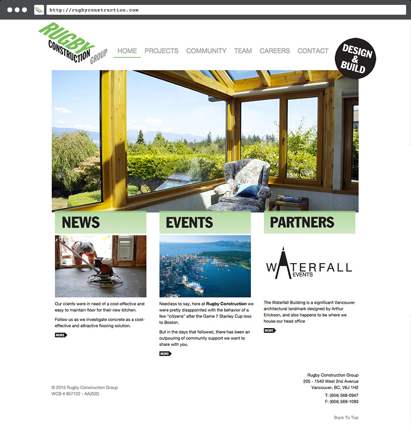

Rugby Construction Group Ltd.
Start simple and build-out: web development, design, and documentation for an aspirational Vancouver construction group.
Rugby Construction needed a website that could showcase not only their completed projects, but also their projects on-the-go. The philosophy behind this was that in-progress photos communicated the realities of building a home — something that customers could benefit from. As well, sales people and project managers could use in-progress photos to highlight building techniques that might suit a customer's needs. The cutting-edge building technologies used by the company were brought to attention through the blog, which also featured stories about the building methods used in basement dig-downs and glass solariums — work for which the company was known.
The front page opened with a randomly selected gallery slideshow of completed projects.
While the project gallery sorted by completed and in-progress projects.

The single-project page featured a touch-scrolling image gallery, as well as 'inspiriation galleries' which were used by salespeople to direct customer requests.

As the name of the company suggests, the owners and staff were keen players of Rugby.

The company focused on building a community around their business and used much of their promotions budget to fund youth Rugby around the city. Jerseys were designed for a youth rugby team.

Additional designs were made for email and direct mail campaigns, construction hoarding (the display fencing that surrounds building sites), safety signage, sales pitch-books, sub-project identities and letterhead. A tradeshow booth was designed that featured an astroturf rugby pitch and 'locker room' — complete with custom digital displays — which was featured at tradeshows across the Lower Mainland.
Conclusion
The construction business is a competitive one, and effectively communicating a company's strengths helps to differentiate it from the rest of the field. A custom website build in conjunction with supplementary design material clearly articulated the company's philosophy that home building was a process rather than a finished product — and ultimately placed the customer's experience first.